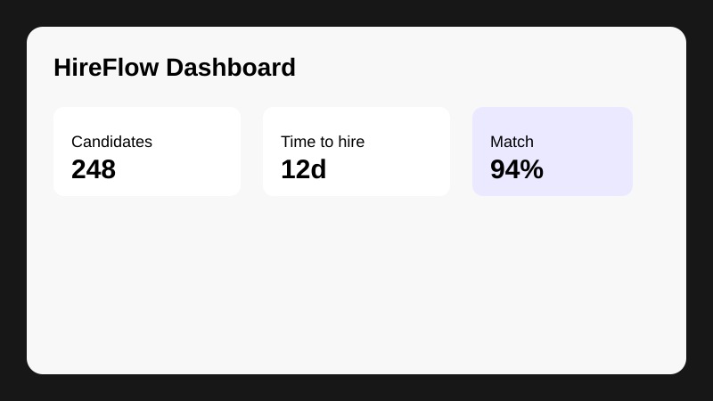

01
Find better candidates
Build focused candidate pipelines, organize talent pools, and keep promising people engaged.
HireFlow brings sourcing, screening, candidate communication, and hiring workflows into one simple platform. Deployment v2
Replace disconnected recruiting tools with a workflow designed around the people doing the hiring.
Build focused candidate pipelines, organize talent pools, and keep promising people engaged.
Automate repetitive screening tasks while keeping structured evaluation criteria across your hiring process.
Give hiring teams a clear view of candidate progress, feedback, interviews, and decisions.
HireFlow connects every step so your team spends less time managing process and more time talking to people.
Create focused roles and connect candidates to your employer story.
Collect structured information and identify the strongest matches.
Coordinate interview stages, feedback, and candidate communication.
Move the selected candidate through the final steps with confidence.
